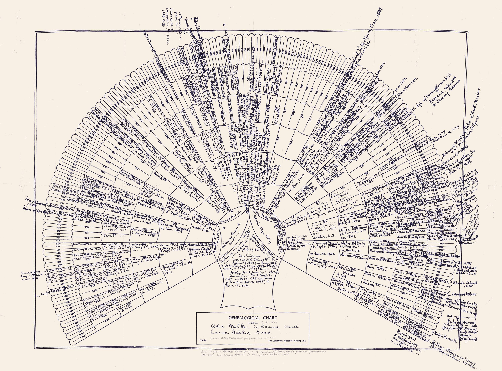

Hold it a foot or two away and move slowly. When a name with a story comes into view, its tag lights up and the story appears.
The marked stories run from Mayflower passengers and Revolutionary War patriots to the Adams line. The names were read from handwriting, so treat them as leads to verify. Read the full write-up.
Read from the chart’s handwriting. Each link would need checking against records before something like a Mayflower Society application.